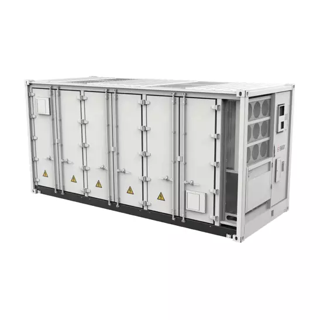

Premies voor batterijopslag als bedrijf: wat is er nog in 2026?

Het premielandschap voor batterijopslag is de voorbije jaren grondig veranderd. Wie vandaag investeert in een BESS, heeft minder keuze dan een paar jaar geleden — maar de steunmaatregelen die overblijven zijn substantieel. Dit overzicht geeft u een eerlijk en actueel beeld van wat er in 2026 effectief beschikbaar is, voor welk type bedrijf, en hoe u regelingen slim kunt inzetten.
Verhoogde Investeringsaftrek: het fundament voor elke investering
De verhoogde thematische investeringsaftrek (VIA) is voor de meeste bedrijven het vertrekpunt. Het is geen directe subsidie, maar een fiscaal voordeel: een extra percentage van de investeringswaarde mag worden afgetrokken van de belastbare winst, wat neerkomt op een lagere belastingfactuur.
De percentages hangen af van het jaar van investering en de grootte van de onderneming. Voor investeringen in 2025 bedraagt de aftrek 40% voor kmo's en zelfstandigen, en 30% voor grote ondernemingen. Voor investeringen in 2026 is de aftrek 40% voor alle ondernemingen — groot en klein. Batterijopslagsystemen vallen onder categorie 8 van de investeringslijst 'Tijdelijke opslag van elektrische en thermische energie'.
Om de aftrek toe te passen, heeft u een attest nodig van VEKA (het Vlaams Energie- en Klimaatagentschap), dat u bij uw belastingaangifte voegt. Voor investeringen uitgevoerd in 2025 is de aanvraagdeadline verlengd tot eind 2026 — een overgangsmaatregel die extra ruimte geeft aan bedrijven die reeds investeerden. Het attest kan aangevraagd worden via vlaanderen.be/verhoogde-investeringsaftrek.
Een aantal voorwaarden om rekening mee te houden: een voorafgaande energiestudie of -audit is verplicht voor alle ondernemingen, de investering moet een terugverdientijd hebben van minstens drie jaar, en voor grote ondernemingen geldt een bijkomende uitsluiting voor investeringen met een interne rentevoet hoger dan 13%. De minimale investeringswaarde bedraagt € 1.000. De maatregel is niet combineerbaar met de Strategische Ecologiesteun (STRES).
GREEN-subsidie: directe steun voor bedrijfsspecifieke investeringen
Waar de investeringsaftrek een fiscale maatregel is, biedt de GREEN-subsidie van VLAIO een directe financiële tegemoetkoming. Deze maatregel ondersteunt bedrijfsspecifieke investeringen in vergroening en elektrificatie — en batterijopslag voor de maximale benutting van eigen groene stroom komt uitdrukkelijk in aanmerking, op voorwaarde dat de batterijcapaciteit niet meer dan vijf keer het gemiddeld dagelijks bedrijfsverbruik bedraagt.
De steun bedraagt 20% tot 55% van de aanvaarde ecologische meerkost ten opzichte van een standaardinvestering, afhankelijk van de grootte van de onderneming en de kosteneffectiviteit van de technologie. De minimale projectkost bedraagt € 50.000, en de totale GREEN-steun per onderneming is geplafonneerd op € 1 miljoen over de volledige steunperiode. De oproep werd verlengd en blijft ook in 2026 opengesteld.
Cruciaal om te weten: de GREEN-subsidie kan niet gecombineerd worden met andere overheidssteun voor dezelfde investering. Dat geldt ook voor de Verhoogde Investeringsaftrek, de Ecoboostlening en andere subsidies van VLAIO of VEKA. U kiest dus één instrument per project. Vraag altijd een voorbespreking aan via green@vlaio.be voordat u een aanvraag indient — VLAIO beoordeelt dan of uw project kans maakt en waar de aandachtspunten liggen.
Strategische Ecologiesteun (STRES): voor wie groot en innovatief investeert
De Strategische Ecologiesteun is weggelegd voor een specifiek segment: grote, bedrijfsspecifieke projecten met een uitgesproken innovatief karakter. Denk aan grootschalige energieopslagsystemen die omwille van hun unieke configuratie niet gestandaardiseerd kunnen worden. De minimumlat ligt hoog — de aanvaarde investeringen moeten minstens € 1,5 miljoen bedragen — en de maximale steun is afgetopt op € 500.000 per drie jaar.
Het steunpercentage varieert van 20% tot 55% en wordt berekend op de ecologische meerkost van de essentiële componenten. De maatregel is toegankelijk voor kmo's en grote ondernemingen, maar niet voor vzw's. VLAIO raadt uitdrukkelijk aan om vooraf een voorbespreking aan te vragen via stres@vlaio.be, zodat u weet of uw project kans maakt vóór u een volledige aanvraag opmaakt. Combineren met de Verhoogde Investeringsaftrek is niet mogelijk.
Ecoboostlening: voordelig financieren voor kmo's
Wie de investering liever spreidt in de tijd, kan als kmo of zelfstandige een beroep doen op de Ecoboostlening van PMV. Het gaat om een achtergestelde lening van € 15.000 tot € 150.000, met een rentevoet van 3% en een looptijd van 3 tot 10 jaar. Batterijsystemen voor de opslag van hernieuwbare energie komen expliciet in aanmerking.
Voorwaarde is dat u als zelfstandige of kmo in hoofdberoep minstens 18 maanden bedrijfsactiviteit kunt aantonen. De lening is niet combineerbaar met de Ecologiepremie+, de GREEN-subsidie of STRES. De combinatie met de Verhoogde Investeringsaftrek is wel mogelijk, wat de Ecoboostlening interessant maakt als financieringsinstrument naast een fiscaal voordeel.
Capaciteitsremuneratiemechanisme: uw batterij laten renderen op het net
Het CRM is geen subsidie in de klassieke zin, maar een verdienmodel. Via jaarlijkse veilingen kent de federale overheid steun toe aan ondernemingen die capaciteit kunnen leveren of besparen op het elektriciteitsnet. Batterijopslagsystemen komen uitdrukkelijk in aanmerking, net als alle andere technologieën voor productie, opslag of vraagbeheer.
Wie een veiling wint, ontvangt steun maar is ook verplicht om beschikbaar te zijn wanneer het net dat vereist. Bij hoge energieprijzen geldt bovendien een terugbetalingsverplichting op de ontvangen steun — het mechanisme is bewust ontworpen om overwinsten te vermijden. Voor bedrijven met een significante batterijcapaciteit is deelname aan het CRM de moeite om te onderzoeken als aanvullend verdienmodel bovenop de operationele voordelen van de installatie.
VLIF: specifiek voor land- en tuinbouwers
Land- en tuinbouwbedrijven kunnen een beroep doen op het Vlaams Landbouwinvesteringsfonds voor de aankoop van een batterijopslagsysteem. Belangrijke voorwaarden: de batterij moet worden ingezet voor de opslag van zelfgeproduceerde groene energie, de opslagcapaciteit is begrensd op basis van het eigen verbruik en de eigen productie, en per bedrijf komt maximaal één batterij in aanmerking binnen de periode 2023–2027. De steun wordt afgetopt op een systeem van 100 kWh, al kan de batterij groter zijn zolang aan de voorwaarden voldaan is.
Ecologiepremie+: niet langer beschikbaar voor batterijopslag
Tot eind 2025 konden bedrijven via de Ecologiepremie+ steun aanvragen voor stationaire batterijopslagsystemen. Sinds 1 januari 2026 is de limitatieve technologieënlijst ingekrompen en staat batterijopslag er niet langer op. Nieuwe aanvragen komen dus niet meer in aanmerking. Aanvragen ingediend vóór 1 januari 2026 worden nog behandeld onder de oude regels. Voor nieuwe projecten zijn de GREEN-subsidie en de Verhoogde Investeringsaftrek de meest aangewezen alternatieven.
Welk instrument past bij uw situatie?
Er is geen universeel antwoord — de juiste keuze hangt af van de schaal van uw investering, de grootte van uw onderneming en of u een directe subsidie of een fiscaal voordeel verkiest.
Voor de meeste kmo's met een investering tussen € 50.000 en € 1,5 miljoen is de keuze in de praktijk: GREEN of VIA. Beide zijn substantieel, maar u kunt ze niet combineren voor dezelfde investering. Wie de VIA kiest, kan daar wel de Ecoboostlening naast zetten voor een voordelige financiering van het investeringsbedrag. Voor grootschalige en innovatieve projecten boven € 1,5 miljoen is STRES de aangewezen weg, los van de VIA.
Een overzicht:
VIA + Ecoboostlening: combineerbaar ✅
VIA + GREEN: niet combineerbaar ❌
VIA + STRES: niet combineerbaar ❌
GREEN + Ecoboostlening: niet combineerbaar ❌
GREEN + STRES: niet combineerbaar ❌
CRM: staat los van de andere maatregelen en is altijd te combineren ✅
VLIF (agrosector) + VIA: controleer per situatie bij VLAIO en het Departement Landbouw
Alle informatie in dit artikel is gebaseerd op de regelgeving van kracht in juni 2026. Subsidieregelingen kunnen wijzigen — raadpleeg steeds de meest recente versie op vlaio.be of neem contact op met Powerland voor een actueel advies op maat.
Terug naar overzicht
{kind=link}